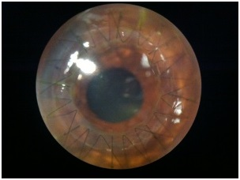

A cornea transplant replaces diseased or scarred corneal tissue with healthy tissue from an organ donor. There are two main types of cornea transplants: traditional, full thickness cornea transplant (also known as penetrating keratoplasty, or PK) and back layer cornea transplant (also known as endothelial keratoplasty, or EK).
A graft replaces central corneal tissue, damaged due to disease or eye injury, with healthy corneal tissue donated from a local eye bank. An unhealthy cornea affects your vision by scattering or distorting light and causing glare and blurred vision. A cornea transplant may be necessary to restore your functional vision. Corneal eye disease is the fourth most common cause of blindness (after cataracts, glaucoma and age-related macular degeneration) and affects more than 10 million people worldwide.
A healthy, clear cornea is essential for good vision. If your cornea is damaged due to eye disease or eye injury, it can become swollen, scarred or severely misshapen and distort your vision.
Certain conditions can affect the clarity of your cornea and put you at greater risk of corneal failure. These include:
A trephine (a circular cutting device), which removes a circular disc of cornea, is used by the surgeon to cut the donor cornea. A second trephine is then used to remove a similar-sized portion of the patient's cornea. The donor tissue is then sewn in place with sutures.
Antibiotic eyedrops are placed, the eye is patched, and the patient is taken to a recovery area while the effects of the anesthesia wear off. The patient typically goes home following this and sees the doctor the following day for the first postoperative appointment.
Lamellar keratoplasty encompasses several techniques which selectively replace diseased layers of the cornea while leaving healthy layers in place. The chief advantage is improved tectonic integrity of the eye. Disadvantages include the technically challenging nature of these procedures, which replace portions of a structure only 500 µm thick, and reduced optical performance of the donor/recipient interface compared to full-thickness keratoplasty.
In this procedure, the anterior layers of the central cornea are removed and replaced with donor tissue. Endothelial cells and the Descemets membrane are left in place. This technique is used in cases of anterior corneal opacifications, scars, and ectatic diseases such as keratoconus.

Endothelial keratoplasty replaces the patient's endothelium with a transplanted disc of posterior stroma/Descemets/endothelium (DSEK) or Descemets/endothelium (DMEK).
This relatively new procedure has revolutionized treatment of disorders of the innermost layer of the cornea (endothelium). Unlike a full-thickness corneal transplant, the surgery can be performed with one or no sutures. Patients may recover functional vision in days to weeks, as opposed to up to a year with full thickness transplants. However, an Australian study has shown that despite its benefits, the loss of endothelial cells that maintain transparency is much higher in DSEK compared to a full-thickness corneal transplant. The reason may be greater tissue manipulation during surgery, the study concluded.[3]
During surgery the patient's corneal endothelium is removed and replaced with donor tissue. With DSEK, the donor includes a thin layer of stroma, as well as endothelium, and is commonly 100–150 µm thick. With DMEK, only the endothelium is transplanted. In the immediate postoperative period the donor tissue is held in position with an air bubble placed inside the eye (the anterior chamber). The tissue self-adheres in a short period and the air is adsorbed into the surrounding tissues.Complications include displacement of the donor tissue requiring repositioning ("refloating"). This is more common with DMEK than DSEK. Folds in the donor tissue may reduce the quality of vision, requiring repair. Rejection of the donor tissue may require repeating the procedure. Gradual reduction in endothelial cell density over time can lead to loss of clarity and require repeating the procedure.
Cornea transplants are performed routinely and have a reasonable success rate. In fact, cornea grafts are the most successful of all tissue transplants.
Like any other surgical procedure, a cornea transplant comes with certain risks. But, for most people, having their vision improved or restored outweighs the potential complications associated with cornea transplant surgery. It is a very personal decision for a patient to decide to undergo cornea transplant surgery.
Complications of a corneal transplant can be significant and can include cornea graft rejection, eye infection and problems associated with the use of stitches. Rejection of the donor tissue is the most serious complication after a corneal transplant and occurs in 5 to 30 percent of patients. Transplant rejection is when your body's immune system detects the donor cornea as a foreign body and attacks and tries to destroy it.
Research indicates that having glaucoma and corneal swelling associated with previous cataract surgery can increase your chances of cornea graft rejection. Recognizing the main warning signs of corneal transplant rejection is the first step to preventing graft failure. These can be remembered using the acronym RSVP:
Rejection signs may occur as early as one month or as late as several years after surgery. Your eye doctor will prescribe medication that can help reverse the rejection process. If detected early, the graft will be successful 9 out of 10 times, according to the Cornea Research Foundation of America.
Should your graft fail, corneal transplant surgery can be repeated. While repeat surgery generally has good outcomes, overall rejection rates increase with the number of corneal transplants you have.